GAM-clustering reanalysis of Tabula Muris Senis single cell RNA-seq data
Source:vignettes/GAMclust_tutorial_SC.Rmd
GAMclust_tutorial_SC.RmdIntroduction
This vignette walks over application of GAM-clustering method for reanalysis of metabolic regulation in Tabula Muris Senis single cell RNA-seq data (mononuclear phagocyte subset), originally described in Gainullina et al.
The vignette requires about an hour of computational time and 16GB of memory for completion.
Installation and libraries
Install GAMclust package:
devtools::install_github("alserglab/GAMclust")
library(GAMclust)
library(gatom)
library(mwcsr)
library(fgsea)
library(data.table)
library(Seurat)
library(BiocFileCache)
library(futile.logger)
set.seed(42)
startTime <- Sys.time()Preparing working environment
First, load and initialize all objects required for GAM-clustering analysis:
- load metabolic network and its metabolites annotation. We provide two networks: KEGG and combined network that includes KEGG, Rhea and transport reactions:
(1.1.) load KEGG metabolic
network network.kegg.rds
and its metabolites annotation met.kegg.db.rds
# KEGG network:
network <- readRDS(url("http://artyomovlab.wustl.edu/publications/supp_materials/GATOM/network.kegg.rds"))
metabolites.annotation <- readRDS(url("http://artyomovlab.wustl.edu/publications/supp_materials/GATOM/met.kegg.db.rds"))(1.2.) or load combined metabolic network network.combined.rds,
its metabolites annotation met.combined.db.rds
and species-specific list of genes that either come from proteome or are
not linked to a specific enzyme gene2reaction.combined.mmu.eg.tsv
for mouse and gene2reaction.combined.hsa.eg.tsv
for human data;
# combined network (KEGG+Rhea+transport reactions):
network <- readRDS(url("http://artyomovlab.wustl.edu/publications/supp_materials/GATOM/network.combined.rds"))
metabolites.annotation <- readRDS(url("http://artyomovlab.wustl.edu/publications/supp_materials/GATOM/met.combined.db.rds"))
gene2reaction.extra <- data.table::fread("http://artyomovlab.wustl.edu/publications/supp_materials/GATOM/gene2reaction.combined.mmu.eg.tsv", colClasses="character")- load species-specific network annotation:
org.Hs.eg.gatom.annofor human data ororg.Mm.eg.gatom.annofor mouse data;
network.annotation <- readRDS(url("http://artyomovlab.wustl.edu/publications/supp_materials/GATOM/org.Mm.eg.gatom.anno.rds"))- load provided list of metabolites that should not be considered during the analysis as connections between reactions (e.g., CO2, HCO3-, etc);
met.to.filter <- data.table::fread(system.file("mets2mask.lst", package="GAMclust"))$ID- initialize MWCS solver:
(4.1.) we recommend to use here either heuristic relax-and-cut solver
rnc_solver from mwcsr
package,
solver <- mwcsr::rnc_solver()(4.2.) either proprietary CPLEX solver (free for academy);
cplex.dir <- "/opt/ibm/ILOG/CPLEX_Studio1271"
solver <- mwcsr::virgo_solver(cplex_dir = cplex.dir)- set working directory where the results will be saved to.
work.dir <- "results-sc"
dir.create(work.dir, showWarnings = F, recursive = T)Preparing objects for the analysis
Preparing data
GAMclust works with bulk, single cell and spatial RNA-seq data.
This vignette shows how to process single cell RNA-seq data on the example of Tabula Muris Senis data reanalysis.
For single cell data, take 6,000-12,000 genes for the GAM-clustering
analysis. To do this while preprocessing
data with Seurat pipeline, set
variable.features.n = 12000 in SCTransform()
function. In case of preprocessing
multi-sample data, set nfeatures=12000 in
SelectIntegrationFeatures()).
Let’s load already preprocessed data.
bfc <- BiocFileCache("./cache", ask = FALSE)
path <- bfcrpath(
bfc,
"http://artyomovlab.wustl.edu/publications/supp_materials/GAMclust/tms_sct12k.rds"
)
seurat_object <- readRDS(path)
E <- as.matrix(Seurat::GetAssayData(object = seurat_object,
assay = "SCT",
layer = "scale.data"))
nrow(E) # ! make sure this value is in range from 6,000 to 12,000# [1] 12000
E[1:3, 1:3]# AACCATGAGATCCCAT-1-0-0-0 AACCATGTCAGAGGTG-1-0-0-0
# Sox17 -0.1865187 -0.2478802
# Mrpl15 -0.4440852 0.3323707
# Lypla1 -0.4182570 -0.5818529
# AAGGTTCTCCTAGAAC-1-0-0-0
# Sox17 -0.2390427
# Mrpl15 -0.5901840
# Lypla1 -0.5602515Genes in your dataset may be named as Symbol, Entrez, Ensembl or
RefSeq IDs. One of these names should be specified as value of
gene.id.type parameter in prepareData().
If you analyse singe cell or spatial RNA-seq data, set
use.PCA=TRUE in prepareData().
E.prep <- prepareData(E = E,
gene.id.type = "Symbol",
use.PCA = TRUE,
use.PCA.n = 50,
network.annotation = network.annotation)
E.prep[1:3, 1:3]# PC1 PC2 PC3
# 16176 -0.0419378 2.222356 -0.7472891
# 278180 -1.2188519 2.806405 1.6716989
# 56744 -1.5140244 3.368009 1.5328317Preparing network
The prepareNetwork() function defines the structure of
the final metabolic modules.
network.prep <- prepareNetwork(E = E.prep,
network = network,
topology = "metabolites",
met.to.filter = met.to.filter,
network.annotation = network.annotation,
gene2reaction.extra = gene2reaction.extra) # for combined network# INFO [2026-07-16 11:31:53] Global metabolite network contains 6754 edges.# INFO [2026-07-16 11:31:53] Largest connected component of this global network contains 1397 nodes and 5139 edges.Preclustering
The preClustering() function defines initial patterns
using k-medoids clustering on gene expression matrix. It is strongly
recommended to do initial clustering with no less than 32 clusters
(initial.number.of.clusters = 32).
You can visualize the initial heatmap as shown below.
cur.centers <- preClustering(E.prep = E.prep,
network.prep = network.prep,
initial.number.of.clusters = 32,
network.annotation = network.annotation)# INFO [2026-07-16 11:31:53] 1123 metabolic genes from the analysed dataset mapped to this component.
cur.centers[1:3, 1:3]# PC1 PC2 PC3
# 1 -4.140217 -3.588960 0.47784732
# 2 -3.374871 1.319177 -1.89015590
# 3 -4.281918 -0.421322 -0.08240903
pheatmap::pheatmap(
GAMclust:::normalize.rows(cur.centers),
cluster_rows=F, cluster_cols=F,
show_rownames=F, show_colnames=T)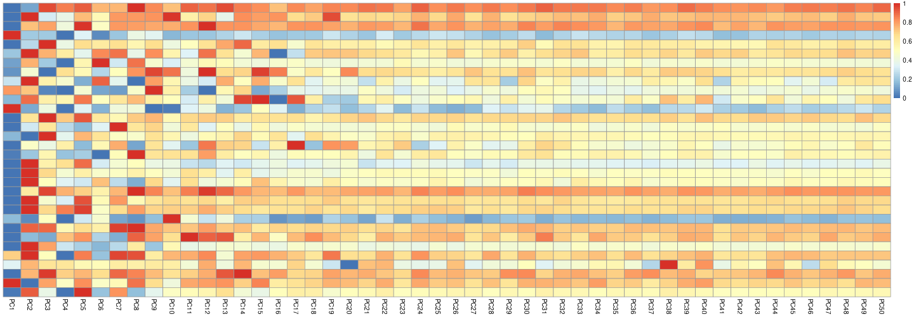
GAM-clustering analysis
Now you have everything prepared for the GAM-clustering analysis.
Initial patterns will be now refined in an iterative process. The
output of gamClustering() function presents a set of
specific subnetworks (also called metabolic modules) that reflect
metabolic variability within a given transcriptional dataset.
Note, that it may take a long time to derive metabolic modules by
gamClustering() function (tens of minutes).
There is a set of parameters which determine the size and number of your final modules. We recommend you to start with the default settings, however you can adjust them based on your own preferences:
If you consider final modules to bee too small or too big and it complicates interpretation for you, you can either increase or reduce by 10 units the
max.module.sizeparameter.If among final modules you consider presence of any modules with too similar patterns, you can reduce by 0.1 units the
cor.thresholdparameter.If among final modules you consider presence of any uninformative modules, you can reduce by 10 times the
p.adj.val.thresholdparameter.
results <- gamClustering(E.prep = E.prep,
network.prep = network.prep,
cur.centers = cur.centers,
start.base = 0.5,
base.dec = 0.05,
max.module.size = 50,
cor.threshold = 0.8,
p.adj.val.threshold = 1e-5,
batch.solver = seq_batch_solver(solver),
work.dir = work.dir,
show.intermediate.clustering = FALSE,
verbose = FALSE,
collect.stats = TRUE)Visualizing and exploring the GAM-clustering results
Each metabolic module is a connected piece of metabolic network whose genes expression is correlated across all dataset.
The following functions will help you to visualize and explore the obtained results.
Get graphs of modules:
getGraphs(modules = results$modules,
network.annotation = network.annotation,
metabolites.annotation = metabolites.annotation,
seed.for.layout = 42,
work.dir = work.dir)# Graphs for module 1 are built# Graphs for module 2 are built# Graphs for module 3 are built# Graphs for module 4 are built# Graphs for module 5 are built# Graphs for module 6 are built# Graphs for module 7 are built# Graphs for module 8 are builtExample of the graph of the third module:
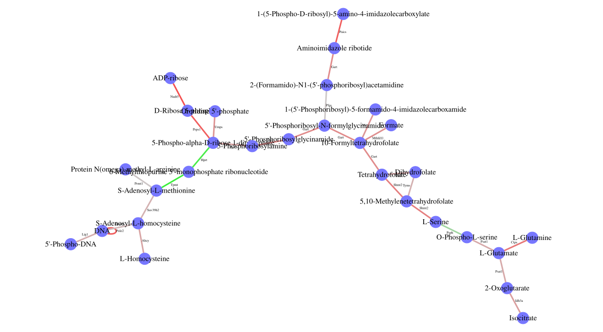
Get gene tables:
The table contains gene list. Each gene has two descriptive values: i) gene’s correlation value with the modules pattern and ii) gene’s score. High score means that this gene’s expression is similar to the module’s pattern and not similar to other modules’ patterns.
m.gene.list <- getGeneTables(modules = results$modules,
nets = results$nets,
patterns = results$patterns.pos,
gene.exprs = E.prep,
network.annotation = network.annotation,
work.dir = work.dir)# Gene tables for module 1 are produced# Gene tables for module 2 are produced# Gene tables for module 3 are produced# Gene tables for module 4 are produced# Gene tables for module 5 are produced# Gene tables for module 6 are produced# Gene tables for module 7 are produced# Gene tables for module 8 are producedExample of the gene table of the third module:
head(GAMclust:::read.tsv(file.path(work.dir, "m.3.genes.tsv"))) |>
kableExtra::kable() |>
kableExtra::kable_styling()| symbol | Entrez | score | cor |
|---|---|---|---|
| Nudt5 | 53893 | 1.6042778 | 0.9406440 |
| Pole2 | 18974 | 1.4296715 | 0.9383090 |
| Prps1 | 19139 | 1.4135713 | 0.9341166 |
| Paics | 67054 | 1.4146098 | 0.9325548 |
| Ctps | 51797 | 1.0938273 | 0.9229224 |
| Idh3a | 67834 | 0.5849869 | 0.9184430 |
Get plots of patterns:
for(i in 1:length(m.gene.list)){
print(fgsea::plotCoregulationProfileReduction(m.gene.list[[i]],
seurat_object,
title = paste0("module ", i),
raster = TRUE,
reduction = "pumap"))
}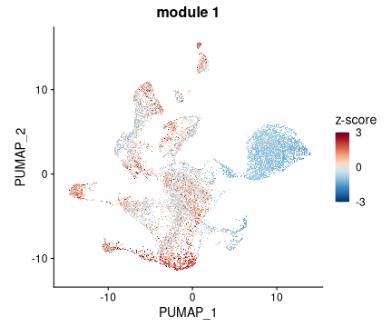
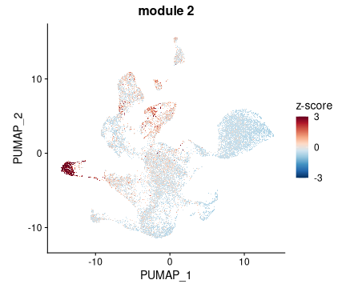
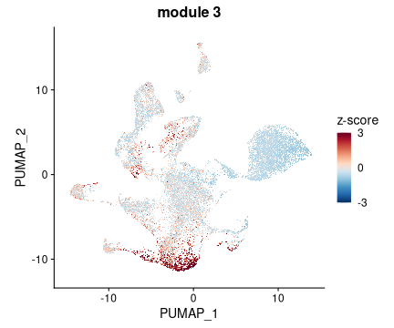
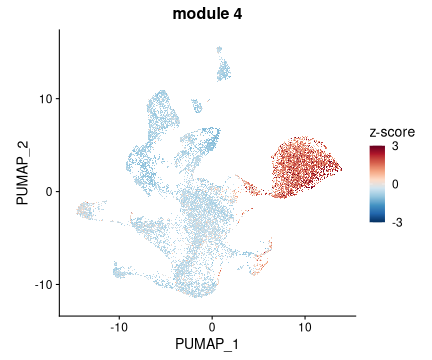
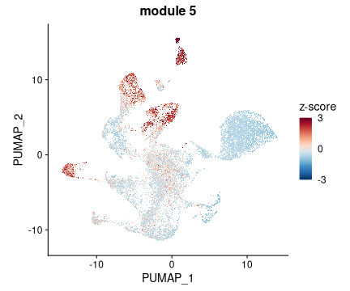
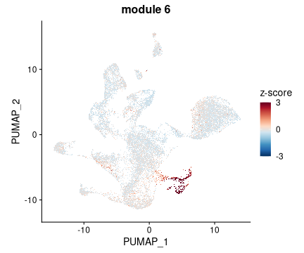
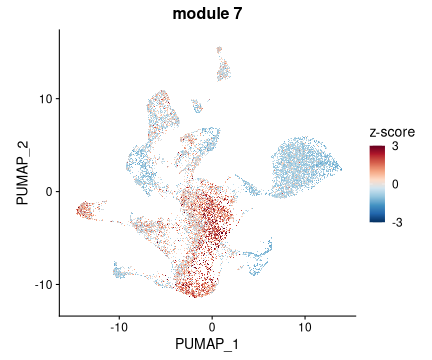
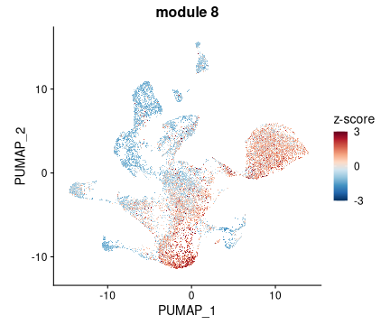
Get plots of individual genes expression (example for the third module):
Seurat::DefaultAssay(seurat_object) <- "SCT"
i <- 3
Seurat::FeaturePlot(seurat_object,
reduction = "pumap",
order = T,
features = m.gene.list[[i]],
ncol = 6,
raster = TRUE,
combine = TRUE)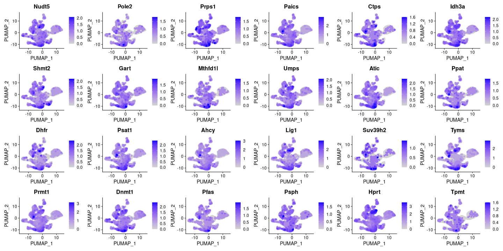
Get tables and plots with annotation of modules:
Functional annotation of obtained modules is done based on KEGG and Reactome canonical metabolic pathways.
getAnnotationTables(network.annotation = network.annotation,
nets = results$nets,
work.dir = work.dir)# Pathway annotation for module 1 is produced# Pathway annotation for module 2 is produced# Pathway annotation for module 3 is produced# Pathway annotation for module 4 is produced# Pathway annotation for module 5 is produced# Pathway annotation for module 6 is produced# Pathway annotation for module 7 is produced# Pathway annotation for module 8 is producedExample of the annotation table of the third module:
head(GAMclust:::read.tsv(file.path(work.dir, "m.3.pathways.tsv"))) |>
kableExtra::kable() |>
kableExtra::kable_styling(font_size = 8) |>
kableExtra::column_spec(1, width = "1.6in") |>
kableExtra::column_spec(2:6, width = "0.5in") |>
kableExtra::column_spec(7, width = "1.2in")| pathway | pval | padj | foldEnrichment | overlap | size | overlapGenes |
|---|---|---|---|---|---|---|
| mmu00230: Purine metabolism | 0.0000005 | 0.0000572 | 8.956522 | 8 | 23 | Atic Gart Hprt Prps1 Ppat Pfas Nudt5 Paics |
| mmu00670: One carbon pool by folate | 0.0000007 | 0.0000572 | 14.045454 | 6 | 11 | Shmt2 Atic Dhfr Gart Tyms Mthfd1l |
| mmu_M00048: De novo purine biosynthesis, PRPP + glutamine => IMP | 0.0000003 | 0.0000572 | 21.458333 | 5 | 6 | Atic Gart Ppat Pfas Paics |
| mmu_M00035: Methionine degradation | 0.0014477 | 0.0857736 | 25.750000 | 2 | 2 | Dnmt1 Ahcy |
| mmu_M00020: Serine biosynthesis, glycerate-3P => serine | 0.0042396 | 0.1674628 | 17.166667 | 2 | 3 | Psph Psat1 |
Annotation heatmap for all modules:
getAnnotationHeatmap(work.dir = work.dir)# Processing module 1# Module size: 40# Processing module 2# Module size: 21# Processing module 3# Module size: 24# Processing module 4# Module size: 21# Processing module 5# Module size: 14# Processing module 6# Module size: 18# Processing module 7# Module size: 8# Processing module 8# Module size: 4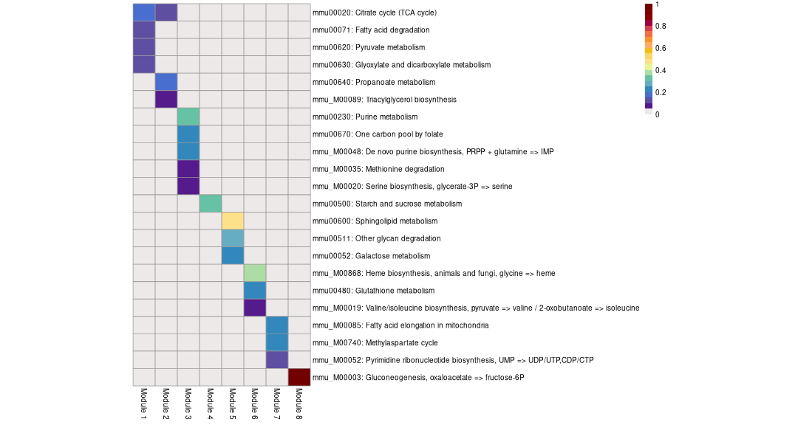
Compare modules obtained in different runs:
You may also compare two results of running GAM-clustering on the
same dataset (e.g. runs with different parameters) or compare two
results of running GAM-clustering on different datasets (then set
same.data=FALSE).
modulesSimilarity(dir1 = work.dir,
dir2 = "old.dir",
name1 = "new",
name2 = "old",
same.data = TRUE,
use.genes.with.pos.score = TRUE,
work.dir = work.dir,
file.name = "comparison.png")Session info
Elapsed time: 45.2 mins.
Peak R memory usage: 13.4 GB
# R version 4.5.3 (2026-03-11)
# Platform: x86_64-pc-linux-gnu
# Running under: Debian GNU/Linux 13 (trixie)
#
# Matrix products: default
# BLAS: /usr/lib/x86_64-linux-gnu/openblas-pthread/libblas.so.3
# LAPACK: /usr/lib/x86_64-linux-gnu/openblas-pthread/libopenblasp-r0.3.29.so; LAPACK version 3.12.0
#
# locale:
# [1] LC_CTYPE=C.utf8 LC_NUMERIC=C LC_TIME=C
# [4] LC_COLLATE=C.utf8 LC_MONETARY=C.utf8 LC_MESSAGES=C.utf8
# [7] LC_PAPER=C.utf8 LC_NAME=C LC_ADDRESS=C
# [10] LC_TELEPHONE=C LC_MEASUREMENT=C.utf8 LC_IDENTIFICATION=C
#
# time zone: America/Chicago
# tzcode source: system (glibc)
#
# attached base packages:
# [1] stats graphics grDevices utils datasets methods base
#
# other attached packages:
# [1] futile.logger_1.4.9 BiocFileCache_3.0.0 dbplyr_2.5.1
# [4] Seurat_5.5.0 SeuratObject_5.4.0 sp_2.2-1
# [7] fgsea_1.39.4 mwcsr_0.1.12 gatom_1.8.4
# [10] GAMclust_0.1.0 data.table_1.18.4 rmarkdown_2.31
#
# loaded via a namespace (and not attached):
# [1] RcppAnnoy_0.0.23 splines_4.5.3 later_1.4.8
# [4] filelock_1.0.3 tibble_3.3.1 polyclip_1.10-7
# [7] graph_1.88.1 XML_3.99-0.23 fastDummies_1.7.6
# [10] lifecycle_1.0.5 httr2_1.2.2 globals_0.19.1
# [13] lattice_0.22-7 MASS_7.3-65 magrittr_2.0.5
# [16] plotly_4.12.0 httpuv_1.6.17 otel_0.2.0
# [19] sctransform_0.4.3 spam_2.11-3 spatstat.sparse_3.1-0
# [22] reticulate_1.46.0 cowplot_1.2.0 pbapply_1.7-4
# [25] DBI_1.3.0 RColorBrewer_1.1-3 abind_1.4-8
# [28] Rtsne_0.17 purrr_1.2.2 BiocGenerics_0.56.0
# [31] rappdirs_0.3.4 IRanges_2.44.0 S4Vectors_0.48.1
# [34] ggrepel_0.9.8 irlba_2.3.7 listenv_0.10.1
# [37] spatstat.utils_3.2-3 pheatmap_1.0.13 goftest_1.2-3
# [40] RSpectra_0.16-2 spatstat.random_3.4-5 fitdistrplus_1.2-6
# [43] parallelly_1.47.0 svglite_2.2.2 codetools_0.2-20
# [46] xml2_1.5.2 tidyselect_1.2.1 farver_2.1.2
# [49] shinyCyJS_1.0.0 matrixStats_1.5.0 stats4_4.5.3
# [52] spatstat.explore_3.8-0 Seqinfo_1.0.0 jsonlite_2.0.0
# [55] progressr_0.19.0 ggridges_0.5.7 survival_3.8-3
# [58] systemfonts_1.3.1 tools_4.5.3 ica_1.0-3
# [61] Rcpp_1.1.2 glue_1.8.1 gridExtra_2.3
# [64] xfun_0.60 dplyr_1.2.1 withr_3.0.3
# [67] formatR_1.14 fastmap_1.2.0 GGally_2.4.0
# [70] digest_0.6.39 R6_2.6.1 mime_0.13
# [73] textshaping_1.0.4 Cairo_1.7-0 scattermore_1.2
# [76] rsvg_2.7.0 tensor_1.5.1 spatstat.data_3.1-9
# [79] RSQLite_3.53.3 tidyr_1.3.2 generics_0.1.4
# [82] httr_1.4.8 htmlwidgets_1.6.4 ggstats_0.13.0
# [85] uwot_0.2.4 pkgconfig_2.0.3 gtable_0.3.6
# [88] blob_1.3.0 lmtest_0.9-40 S7_0.2.2
# [91] XVector_0.50.0 htmltools_0.5.9 dotCall64_1.2
# [94] BioNet_1.70.0 scales_1.4.0 kableExtra_1.4.0
# [97] Biobase_2.70.0 png_0.1-9 spatstat.univar_3.1-7
# [100] knitr_1.51 lambda.r_1.2.4 rstudioapi_0.17.1
# [103] reshape2_1.4.5 nlme_3.1-168 curl_7.1.0
# [106] cachem_1.1.0 zoo_1.8-15 stringr_1.6.0
# [109] KernSmooth_2.23-26 vipor_0.4.7 parallel_4.5.3
# [112] miniUI_0.1.2 AnnotationDbi_1.72.0 ggrastr_1.0.2
# [115] pillar_1.11.1 grid_4.5.3 vctrs_0.7.3
# [118] RANN_2.6.2 promises_1.5.0 xtable_1.8-8
# [121] cluster_2.1.8.1 beeswarm_0.4.0 Rgraphviz_2.54.0
# [124] evaluate_1.0.5 cli_3.6.6 compiler_4.5.3
# [127] futile.options_1.0.1 rlang_1.3.0 crayon_1.5.3
# [130] future.apply_1.20.2 labeling_0.4.3 ggbeeswarm_0.7.3
# [133] plyr_1.8.9 stringi_1.8.7 viridisLite_0.4.3
# [136] deldir_2.0-4 BiocParallel_1.44.0 Biostrings_2.78.0
# [139] lazyeval_0.2.3 spatstat.geom_3.7-3 Matrix_1.7-4
# [142] RcppHNSW_0.6.0 patchwork_1.3.2 bit64_4.8.2
# [145] future_1.70.0 ggplot2_4.0.3 KEGGREST_1.53.5
# [148] shiny_1.13.0 ROCR_1.0-12 igraph_2.3.3
# [151] memoise_2.0.1 fastmatch_1.1-8 bit_4.6.0